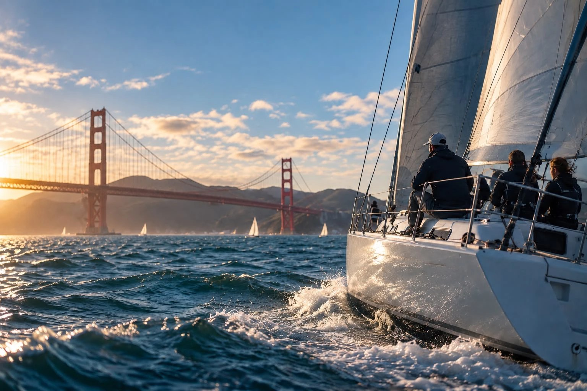
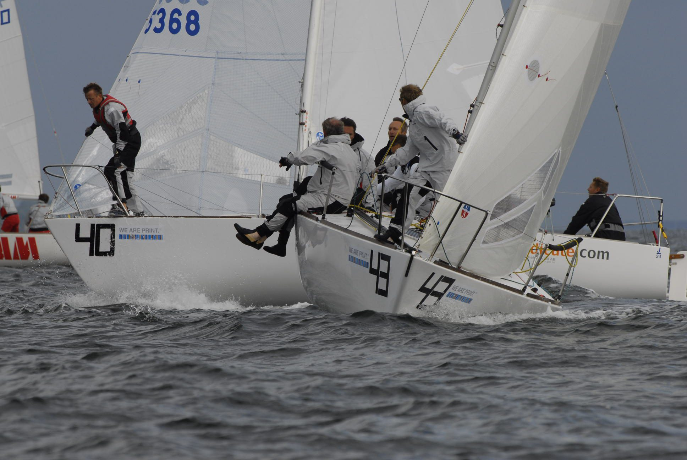
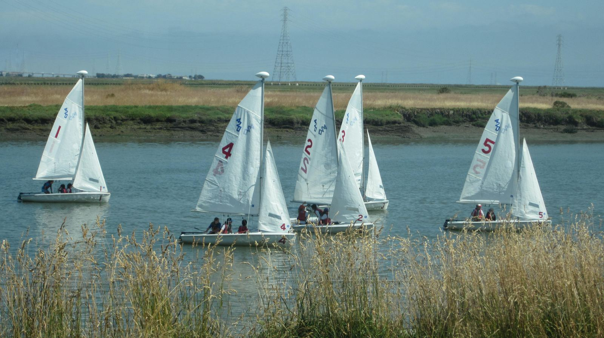
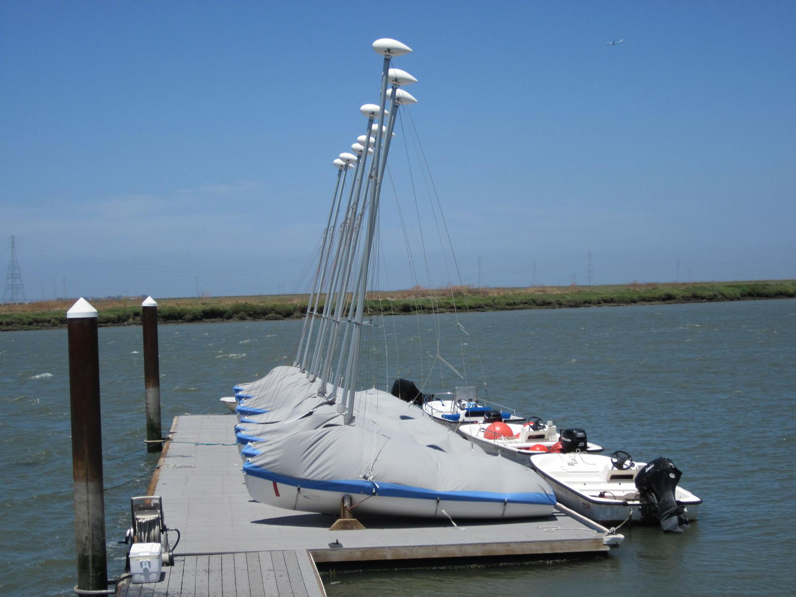

Current More ways to get on the water.
Find people to sail with, learn from, and get on the water.
Find a sail
Sailors
Find sailors, skippers and opportunities to sail.
Find a sail
Skills
Find qualified coaching and instruction.

Sailboats
Find ways to access boats without owning one.